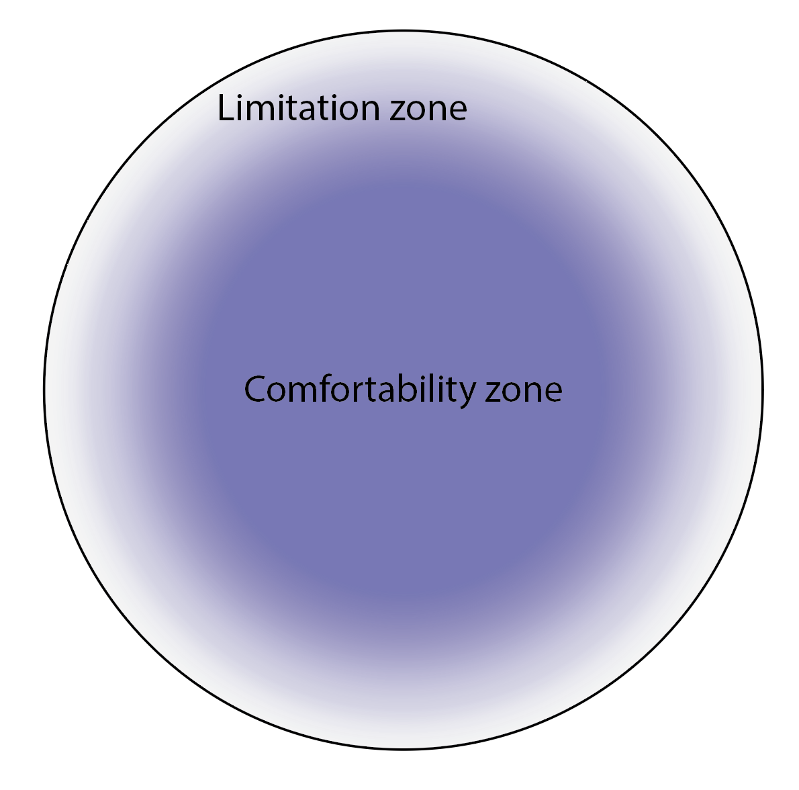

Week 8 – Lecture A
Jelmer Poelstra
October 12, 2026
Do you use genAI for …
Complete the sentence: “I feel ____ about AI”
Conventional machine learning (ML) is a kind of AI and has been used for decades in biology,
but more sophisticated neural-network based AI has been developed and applied more recently:
Commonly used in the past decade, e.g.:
Also used outside of bioinformatics, like image classification, e.g., characterizing soybean defoliation from drone images (Zhang et al. 2022).
This is what we’ll focus on this week!
LLMs are a type of generative AI that can understand and generate human language
— including code. They are trained on vast amounts of text.
In simple terms, LLMs such as ChatGPT aim to predict the next part of a word or phrase based on a user-provided text prompt.
— Cooper et al. (2024)
However:
Only older models only looked at the last few words (e.g., early search autocomplete).
LLMs use an architecture called “transformers”, which considers the broader context:
the full input text and the output generated so far.
G = Generative
P = Pre-trained
T = Transformer
Beyond the training data
Many genAI tools can also use information outside of their training data, such as a file you upload or web search results, by adding it to the input text.
This has become much more common in the last few years: many tools now automatically search the web when a question is about recent events.
Learn to predict the next word (or part of a word) from huge amounts of text (web, books, code).
The model knows a lot, but can’t yet answer questions or follow instructions.
Train on example conversations, so the model follows instructions and acts as an assistant.
Reward good answers, as rated by humans or checked automatically.
Why this matters
Performance degrades with conversation length: Older parts are dropped or summarized,
and the middle tends to get “lost”.
Start a new chat for each new task — and even within a task, once a conversation gets long.
A model name like Claude Sonnet 5.5 combines three “levels”:
Companies each make their own models — the frontier:
Each company offers models of different sizes. For Claude:
Each tier gets updated up to every few months:
E.g., Claude Opus in 2026: 4.6 → 4.7 → 4.8 → 5 → 5.5.
Each update is generally an improvement.
Tool ≠ model: chat tools often let you pick a model, and some tools use another company’s models.
For example, Microsoft Copilot mainly runs OpenAI’s GPT models.
A 2025 AI-generated alphabet poster
by Maria Sukhareva.
“How many n’s are in the word unconventional?”
“How many b’s are in the word blueberry?”
Still: Why couldn’t it count letters?
LLMs see tokens, not letters: “blueberry” may be just one or two tokens, so the model never directly “sees” its individual letters.
Newer models get this right by reasoning step by step or by running code. But it shows why some trivial tasks can be hard for an LLM.
Ohio State is one of a number of universities that have fully embraced genAI in education:
Ohio State is leading a bold, groundbreaking initiative to integrate artificial intelligence into the undergraduate educational experience. The initiative will ensure that every Ohio State student, beginning with the class of 2029, will graduate being AI fluent — fluent in their field of study, and fluent in the application of AI in that field.
What have you noticed of this initiative?
Last year, Nature published a News Feature about genAI adoption at universities :
Pearson (2025)
At Ohio State University in Columbus, students this year will take compulsory AI classes as part of an initiative to ensure that all of them are ‘AI fluent’ by the time they graduate.
But many education specialists are deeply concerned about the explosion of AI on campuses: they fear that AI tools are impeding learning because they’re so new that teachers and students are struggling to use them well. Faculty members also worry that students are using AI to short-cut their way through assignments and tests, and some research hints that offloading mental work in this way can stifle independent, critical thought.
How do these numbers compare to our poll? Note that this survey was among undergrads in 2024.
From now on, you’re allowed to use genAI for all graded course components.
But you must always be able to explain your reasoning and code, and document how you used genAI.
Ohio State provides access to several genAI tools —
and when you can, you should use these rather than personal accounts:
Your data is handled according to Ohio State’s policies.
So you can share data up to the highest level, “S4: Restricted” (see OSU’s data levels ), which includes your unpublished research data.
(Though not approved for regulated data, such as HIPAA patient data.)
You get access to more advanced models with higher usage limits (at least compared to free personal accounts).
All these approved tools are only approved when you use them through OSU,
i.e. by logging in with your OSU credentials.
Overview of OSU’s approved AI tools
OSU’s GenAI Service provides “API keys” for models from Anthropic, OpenAI, and others.
With these keys, you can use these models within other software, like Claude in VS Code (next lecture).
Unlike the chat tools, this is pay-per-use: every request costs money.
Do you use approved tools, or do you prefer ChatGPT or something else?
For coding tasks, it is highly beneficial to use genAI directly inside your IDE (next lecture):
Agents are very convenient and powerful, but also potentially dangerous:
e.g., they can delete or overwrite files. “Guardrails” are needed.
With the example task of troubleshooting an error:
Chat AI
Agentic AI
What it can see
Only what you paste or upload
Your project files, your environment, output of commands it runs
What you need to tell it
Your OS, program versions, extensive context, error message
Error message, less context
Prompt structure
Copy-paste error, explain context, ask for solution
Copy-paste or just point to error, ask to fix
Workflow
You run the code and paste errors back, loop between you and the AI
Agent runs the code, reads the errors, fixes them, and retries until done
All the options so far are cloud-based.
Each request goes to the provider’s servers, where the models are hosted and run.
The models we’ve discussed are proprietary and not available for download.
Open-weight (open source) models like DeepSeek, Llama, Gemma, and Qwen can be downloaded and run locally.
Smaller models can run on personal computers; OSC can run larger models (on GPU nodes).
Beyond compute costs, usage is free.
Less capable than the proprietary models, but not necessarily by much.
Partly based on Dewar (2026)
Anything else? How have you been using genAI in this area?
See also:
The most important skill in prompting is expertise in the domain you’re prompting for.
— Sean Goedecke , “LLMs reward expertise”
Experts ask better questions, spot wrong answers, and steer AI toward better solutions.
Beginners often can’t tell when it’s wrong.
Go to https://gemini.google.com.
Click “Sign in” and sign in with your Ohio State email address (name.#@osu.edu) —
you’ll be sent to the OSU login page.
While you can chat right away, you need to sign in (top right)
to enable OSU’s data protection and access the more advanced models and features.
Go to https://gemini.google.com.
Click “Sign in” and sign in with your Ohio State email address (name.#@osu.edu) —
you’ll be sent to the OSU login page.
Now you’re signed in.
| Model | Mode | What it is | Notes |
|---|---|---|---|
| 3.6 | Flash | Quick answers | Fast; fine for most everyday questions |
| 3.6 | Thinking | Reasons longer first | Slower, but better at complex, multi-step problems and self-correction |
| 3.1 | Pro | Older, larger model | Slower, but strong on expert-knowledge questions; older training data |
Try some of these in Gemini:
“You’re a quiz master who asks basic questions about the Unix shell. Make a fun game show and start asking questions!“
“Explain how to write a
forloop in the Unix shell and how it works”
“What does the following command do?”
gunzip -v garrigos/ref/*
“Explain the most important options of the
git logcommand”
“How can I tell the program TrimGalore that my reads use Illumina two-color chemistry?”
Last year, Microsoft Copilot (GPT-5) gave an incorrect answer.
It didn’t find the relevant option, and instead made up a --polyG option that doesn’t exist.
What answer did Gemini give you?
[Add screenshot]
Try Deep Research in Gemini (select it under “Tools”) with:
“Compare TrimGalore, fastp, and Cutadapt for trimming Illumina RNA-seq reads. Which are most used in recent publications, and what are their pros and cons?“
In constant, confusing flux: recently renamed from “NotebookLM” to “Gemini Notebook”, and now partially integrated with “plain” Gemini’s Notebook option.
At https://notebook.google.com:
log in with OSU credentials as before.
Access to full text is an issue
On your own (~5 min), try at least one of these in Gemini:
Then discuss in your group (~5 min):
Some general advice:
Especially for certain larger or more complex tasks, consider including details on:
Task:
Write a Bash script that counts the number of reads in a FASTQ file.
+ Context & constraints:
[…] The file is gzip-compressed, and its name should be an argument to the script. Only use standard Unix tools.
+ Format & example:
[…] Print file name and read count separated by a tab:
sampleA_R1.fastq.gz 250000
Many AI answers are poor because it doesn’t know your file names, column names, or software.
AI inside your IDE can see these, which is a big advantage.
Note
In Gemini, start two new chats:
In one, enter the first, “Task”-only version of the prompt from the previous slide.
In the other, enter the full version:
Write a Bash script that counts the number of reads in a FASTQ file. The file is gzip-compressed, and its name should be an argument to the script. Only use standard Unix tools. Print file name and read count separated by a tab:
sampleA_R1.fastq.gz 250000
Compare the two answers: e.g., how do the scripts differ, and would both work?
These make it less likely that the model just makes stuff up.
Models make things up, e.g.:
Models are very good at some tasks but fail surprisingly at others.
The frontier keeps moving, so past experience doesn’t tell you which tasks will fail.
GenAI often gets you most of the way, but not all the way.
Finishing the task takes expertise — which is harder when you didn’t do the first 90% yourself.

Figure by Hannah Toth
grep), but hallucinate more with niche or new topics (e.g., a specific TrimGalore option), especially when no clear documentation can be found with an online search.Generating code is now easy, but verifying it is not.
You are responsible for the results, so treat AI output as a draft that you check.
Click here to go to the next lecture, <strong>Coding with an AI agent in VS Code</strong>